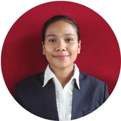

|
 Pendidikan
Sarjana Informatika | IPK: 4.00/4.00
Pengalaman
Panitia PCA 2025 | Divisi Olahraga - Program Cinta Almamater IT Del
Panitia Matrikulasi 2025 | Divisi Acara - Institut Teknologi Del
Asisten Dosen | Mata Kuliah Madas 1 - Institut Teknologi Del
Panitia Pre-Tryout UTBK 2025 | Divisi Pembuatan dan Pemeriksaan Soal - Institut Teknologi Del
Anggota UKM DelPro | Institut Teknologi Del
Ketua Asrama | Institut Teknologi Del ProyekWebsite | Proyek Mata Kuliah Aplikasi Java | Proyek Mata Kuliah Database & SQL | Proyek Mata Kuliah UI/UX Design | Proyek Mata Kuliah Aplikasi/Web | Proyek Kelompok |
Eliza Novita T. RajagukgukSarjana InformatikaEmail: elizarajagukguk00630@gmail.com Saya adalah mahasiswa Informatika yang memiliki minat dalam teknologi, pemrograman, dan UI/UX. Saya senang belajar hal baru, bertanggung jawab, dan mampu bekerja sama dalam tim. KeahlianProgramming
Framework
Tools
|
Sertifikat
DIGICOMP 2026
- 2nd Place Winner | 2026
NEIRA 3 2026
- Finalist - Essay & Business Plan Competition | 2026
Portfolio
Github | @therezaa
- Website Portfolio | HTML | CSS
- Aplikasi Pengolahan Data | Java
- Sistem Database Akademik | SQL
- Website Informasi Mahasiswa | HTML | JavaScript
Figma | UI/UX Design
- Desain Aplikasi Layanan Mahasiswa
- Prototype Aplikasi Mobile
- Perancangan Antarmuka Website
Others
- Proyek Aplikasi Kelompok | Java
- Proyek Website Kelompok | HTML | CSS